일러두기
“본 vignett는 dplyr 패키지와의 상호 운용성을 강조하기 위해서 dplyr 패키지의 vignett인 ’Introduction to dplyr’을 참고하였다.”
분석을 위한 데이터를 획득한 후에는 다음을 수행해야 한다.:
- 데이터의 품질을 진단한다.
- 만약 데이터 품질의 문제를 발견한다면,
- 문제의 데이터를 보완하거나 경우에 따라서는 재획득을 수행햐야 한다.
- 데이터를 이해하기 위한 탐색을 수행하여, 분석의 전개 방향에 대한 시나리오를 수립한다.
- 분석에 효과적인 변수를 파생하거나 변수의 변환을 수행한다.
dlookr 패키지는 다음의 과정을 빠르고 쉽게 수행하도록 도움을 준다.
- 데이터의 진단을 수행하거나 데이터 품질 진단 리포트를 자동으로 생성한다.
- 다양한 방법으로 데이터를 탐색하고 EDA(탐색적 데이터 분석) 보고서를 생성한다.
- 연속형 변수를 비닝(binning)하여 범주형 변수로 만들고, 비닝의 의사결정에 도움을 주는 리포트를 생성한다.
이 문서는 dlookr 기능 중에서 탐색적 데이터 분석 기능을 소개한다. 여러분은 dlookr에서 제공하는 함수로 데이터 프레임과 데이터 프레임을 상속한 tbl_df 데이터의 탐색적 데이터 분석을 수행하는 방법을 일힐 수 있을 것이다.
dlookr 패키지는 dplyr 패키지와 함께 사용하면 시너지가 증가된다. 특히 데이터 탐색 및 데이터 조작에서 tidyverse 패키지 그룹의 효율성을 높여준다.
데이터
dlookr 패키지로 EDA를 수행하는 기초적인 사용 방법을 설명하기 위해서 Carseats를 사용한다. ISLR 패키지의 Carseats는 400개의 매장에서 아동용 카시트를 판매하는 시뮬레이션 데이터다. 이 데이터는 판매량을 예측하는 목적으로 생성한 데이터 프레임이다.
'data.frame': 400 obs. of 11 variables:
$ Sales : num 9.5 11.22 10.06 7.4 4.15 ...
$ CompPrice : num 138 111 113 117 141 124 115 136 132 132 ...
$ Income : num 73 48 35 100 64 113 105 81 110 113 ...
$ Advertising: num 11 16 10 4 3 13 0 15 0 0 ...
$ Population : num 276 260 269 466 340 501 45 425 108 131 ...
$ Price : num 120 83 80 97 128 72 108 120 124 124 ...
$ ShelveLoc : Factor w/ 3 levels "Bad","Good","Medium": 1 2 3 3 1 1 3 2 3 3 ...
$ Age : num 42 65 59 55 38 78 71 67 76 76 ...
$ Education : num 17 10 12 14 13 16 15 10 10 17 ...
$ Urban : Factor w/ 2 levels "No","Yes": 2 2 2 2 2 1 2 2 1 1 ...
$ US : Factor w/ 2 levels "No","Yes": 2 2 2 2 1 2 1 2 1 2 ...개별 변수들의 의미는 다음과 같다. (ISLR::Carseats Man page 참고)
- Sales
- 지역의 단위 판매량 (단위: 천개)
- CompPrice
- 지역의 경쟁 업체가 부과하는 가격
- Income
- 지역 공동체 수입 수준 (단위: 천달러)
- Advertising
- 회사의 지역에 대한 광고 예산 (단위: 천달러)
- Population
- 지역의 인구 규모 (단위: 천명)
- Price
- 지역의 자동차 좌석 요금
- ShelveLoc
- 각 사이트에서 자동차 좌석의 선반 위치의 품질을 나타내는 수준. “Bad”, “Good”, “Medium”.
- Age
- 각 지역의 평균 연령
- Education
- 각 지역의 교육 수준
- Urban
- 점포의 도시 또는 농촌 소재 여부. Yes는 도시, No는 농촌.
- US
- 점포의 미국 소재 여부. Yes는 미국 소재, No는 미국 외 소재.
데이터 분석을 수행할 때, 결측치가 포함된 데이터를 자주 접한다. 그러나 Carseats는 결측치가 없은 완전한 데이터다. 그래서 다음과 같이 결측치를 생성하였다. 그리고 carseats라는 이름의 데이터 프레임 객체를 생성한다.
탐색적 데이터 분석
dlookr은 수치 데이터의 기술통계량을 계산하여 데이터의 분포를 이해할 수 있도록 도와준다. 또한 변수들 사이의 상관관계를 규명하고 정규성 검정을 수행한다. 그리고 목적변수(Target Variable)와 독립변수들간의 관계를 규명해준다.
다음은 dlookr이 제공하는 EDA 함수와 함수의 기능 목록이다.:
describe()는 수치 데이터의 기술통계량을 제공한다.normality()와plot_normality()는 수치 데이터의 정규성 검정과 시각화를 수행한다.correlate()와plot_correlate()는 두 수치 데이터 간의 상관계수를 계산하고 시각화를 제공한다.target_by()는 목적변수(Target Variable)을 정의하고relate()는 목적변수에 대응하는 관심있는 변수와의 관계를 규명한다.plot.relate()는 목적변수에 대응하는 관심있는 변수와의 관계를 시각화한다.eda_report()는 탐색적 데이터 분석을 수행한 후 그 결과를 보고서로 만들어 준다.
단변량 데이터 EDA
describe()을 이용한 기술통계량 계산
describe()는 수치 데이터의 기술통계량을 계산해 준다. 기술통계량은 수치 변수의 분포를 판단하는 것을 도와준다.
describe()가 반환하는 tbl_df 객체의 변수는 다음과 같다.
n: 결측치를 제외한 데이터 건수na: 결측치 건수mean: 산술평균sd: 표준편차se_mean: 표준오차. sd/sqrt(n)IQR: 사분위 범위(Interquartile range) (Q3-Q1)skewness: 왜도kurtosis: 첨도p25: Q1. 25% 백분위수p50: 중위수. 50% 백분위수p75: Q3. 75% 백분위수p01,p05,p10,p20,p30` : 1%, 5%, 20%, 30% 백분위수p40,p60,p70,p80` : 40%, 60%, 70%, 80% 백분위수p90,p95,p99,p100` : 90%, 95%, 99%, 100% 백분위수
다음처럼 describe()는 carseats의 모든 수치 변수의 통계량을 계산한다.:
describe(carseats)
# A tibble: 8 x 26
variable n na mean sd se_mean IQR skewness kurtosis
<chr> <int> <int> <dbl> <dbl> <dbl> <dbl> <dbl> <dbl>
1 Sales 400 0 7.50 2.82 0.141 3.93 0.186 -0.0809
2 CompPrice 400 0 125. 15.3 0.767 20 -0.0428 0.0417
3 Income 380 20 69.3 28.1 1.44 48 0.0360 -1.10
4 Advertising 400 0 6.64 6.65 0.333 12 0.640 -0.545
# … with 4 more rows, and 17 more variables: p00 <dbl>, p01 <dbl>,
# p05 <dbl>, p10 <dbl>, p20 <dbl>, p25 <dbl>, p30 <dbl>, p40 <dbl>,
# p50 <dbl>, p60 <dbl>, p70 <dbl>, p75 <dbl>, p80 <dbl>, p90 <dbl>,
# p95 <dbl>, p99 <dbl>, p100 <dbl>왜도: 왼쪽으로 치우친 분포의 데이터, 즉 skewness가 제법 큰 양수를 갖는 변수는 정규분포를 따르도록 log, sqrt 변환 등을 고려해야 한다. Advertising 변수는 변수변환을 고려해야할 것 같다.산술평균,표준편차,표준오차: 표준오차(se_mean)가 7.3688218로 상당히 큰Population는 대표치인 산술평균(mean)의 대표성이 낮다. 산술평균에 비해서 표준편차(sd)의 크기도 상당히 큰 편이다.
다음은 선택된 몇 개의 변수에 대해서만 기술통계량을 계산한다.
# Select columns by name
describe(carseats, Sales, CompPrice, Income)
# A tibble: 3 x 26
variable n na mean sd se_mean IQR skewness kurtosis
<chr> <int> <int> <dbl> <dbl> <dbl> <dbl> <dbl> <dbl>
1 Sales 400 0 7.50 2.82 0.141 3.93 0.186 -0.0809
2 CompPrice 400 0 125. 15.3 0.767 20 -0.0428 0.0417
3 Income 380 20 69.3 28.1 1.44 48 0.0360 -1.10
# … with 17 more variables: p00 <dbl>, p01 <dbl>, p05 <dbl>,
# p10 <dbl>, p20 <dbl>, p25 <dbl>, p30 <dbl>, p40 <dbl>, p50 <dbl>,
# p60 <dbl>, p70 <dbl>, p75 <dbl>, p80 <dbl>, p90 <dbl>, p95 <dbl>,
# p99 <dbl>, p100 <dbl># Select all columns between year and day (inclusive)
describe(carseats, Sales:Income)
# A tibble: 3 x 26
variable n na mean sd se_mean IQR skewness kurtosis
<chr> <int> <int> <dbl> <dbl> <dbl> <dbl> <dbl> <dbl>
1 Sales 400 0 7.50 2.82 0.141 3.93 0.186 -0.0809
2 CompPrice 400 0 125. 15.3 0.767 20 -0.0428 0.0417
3 Income 380 20 69.3 28.1 1.44 48 0.0360 -1.10
# … with 17 more variables: p00 <dbl>, p01 <dbl>, p05 <dbl>,
# p10 <dbl>, p20 <dbl>, p25 <dbl>, p30 <dbl>, p40 <dbl>, p50 <dbl>,
# p60 <dbl>, p70 <dbl>, p75 <dbl>, p80 <dbl>, p90 <dbl>, p95 <dbl>,
# p99 <dbl>, p100 <dbl># Select all columns except those from year to day (inclusive)
describe(carseats, -(Sales:Income))
# A tibble: 5 x 26
variable n na mean sd se_mean IQR skewness kurtosis
<chr> <int> <int> <dbl> <dbl> <dbl> <dbl> <dbl> <dbl>
1 Advertisi… 400 0 6.64 6.65 0.333 12 0.640 -0.545
2 Population 400 0 265. 147. 7.37 260. -0.0512 -1.20
3 Price 400 0 116. 23.7 1.18 31 -0.125 0.452
4 Age 400 0 53.3 16.2 0.810 26.2 -0.0772 -1.13
# … with 1 more row, and 17 more variables: p00 <dbl>, p01 <dbl>,
# p05 <dbl>, p10 <dbl>, p20 <dbl>, p25 <dbl>, p30 <dbl>, p40 <dbl>,
# p50 <dbl>, p60 <dbl>, p70 <dbl>, p75 <dbl>, p80 <dbl>, p90 <dbl>,
# p95 <dbl>, p99 <dbl>, p100 <dbl>dplyr을 이용해서 왼쪽이나 오른쪽으로 치우친 정도(왜도)의 크기별로 정렬할 수 있다.:
library(dplyr)
carseats %>%
describe() %>%
select(variable, skewness, mean, p25, p50, p75) %>%
filter(!is.na(skewness)) %>%
arrange(desc(abs(skewness)))
# A tibble: 8 x 6
variable skewness mean p25 p50 p75
<chr> <dbl> <dbl> <dbl> <dbl> <dbl>
1 Advertising 0.640 6.64 0 5 12
2 Sales 0.186 7.50 5.39 7.49 9.32
3 Price -0.125 116. 100 117 131
4 Age -0.0772 53.3 39.8 54.5 66
# … with 4 more rowsdescribe() 함수는 dplyr 패키지의 group_by() 함수 구문을 지원한다.
carseats %>%
group_by(US) %>%
describe(Sales, Income)
# A tibble: 4 x 27
variable US n na mean sd se_mean IQR skewness
<chr> <fct> <int> <int> <dbl> <dbl> <dbl> <dbl> <dbl>
1 Income No 134 8 65.7 28.2 2.44 50.8 0.130
2 Income Yes 246 12 71.3 27.9 1.78 46 -0.0102
3 Sales No 142 0 6.82 2.60 0.218 3.44 0.323
4 Sales Yes 258 0 7.87 2.88 0.179 4.23 0.0760
# … with 18 more variables: kurtosis <dbl>, p00 <dbl>, p01 <dbl>,
# p05 <dbl>, p10 <dbl>, p20 <dbl>, p25 <dbl>, p30 <dbl>, p40 <dbl>,
# p50 <dbl>, p60 <dbl>, p70 <dbl>, p75 <dbl>, p80 <dbl>, p90 <dbl>,
# p95 <dbl>, p99 <dbl>, p100 <dbl>carseats %>%
group_by(US, Urban) %>%
describe(Sales, Income)
# A tibble: 12 x 28
variable US Urban n na mean sd se_mean IQR skewness
<chr> <fct> <fct> <int> <int> <dbl> <dbl> <dbl> <dbl> <dbl>
1 Income No No 40 4 62.1 29.8 4.72 51.8 0.367
2 Income No Yes 91 3 67.5 27.4 2.87 48 0.0518
3 Income No <NA> 3 1 59.7 37.0 21.4 37 -0.162
4 Income Yes No 68 3 70.2 30.7 3.72 53 0.0414
# … with 8 more rows, and 18 more variables: kurtosis <dbl>,
# p00 <dbl>, p01 <dbl>, p05 <dbl>, p10 <dbl>, p20 <dbl>, p25 <dbl>,
# p30 <dbl>, p40 <dbl>, p50 <dbl>, p60 <dbl>, p70 <dbl>, p75 <dbl>,
# p80 <dbl>, p90 <dbl>, p95 <dbl>, p99 <dbl>, p100 <dbl>normality()을 이용한 수치형 변수의 정규성 검정
normality()는 수치 데이터의 정규성 검정을 수행한다. Shapiro-Wilk 정규성 검정을 수행하며, 관측치의 개수가 5000보다 클 경우에는 5000개의 단순 임의 추출을 수행한 후 검정한다.
normality()가 반환하는 tbl_df 객체의 변수는 다음과 같다.
statistic: Shapiro-Wilk 검정의 통계량p_value: Shapiro-Wilk 검정의 p-valuesample: Shapiro-Wilk 검정을 수행한 샘플 관측치의 개수
다음처럼 normality()는 carseats의 모든 수치 변수의 정규성 검정을 수행한다.:
normality(carseats)
# A tibble: 8 x 4
vars statistic p_value sample
<chr> <dbl> <dbl> <dbl>
1 Sales 0.995 2.54e- 1 400
2 CompPrice 0.998 9.77e- 1 400
3 Income 0.961 1.55e- 8 400
4 Advertising 0.874 1.49e-17 400
# … with 4 more rows다음은 선택된 몇 개의 변수에 대해서만 정규성 검정을 수행한다.
# Select columns by name
normality(carseats, Sales, CompPrice, Income)
# A tibble: 3 x 4
vars statistic p_value sample
<chr> <dbl> <dbl> <dbl>
1 Sales 0.995 0.254 400
2 CompPrice 0.998 0.977 400
3 Income 0.961 0.0000000155 400# Select all columns between year and day (inclusive)
normality(carseats, Sales:Income)
# A tibble: 3 x 4
vars statistic p_value sample
<chr> <dbl> <dbl> <dbl>
1 Sales 0.995 0.254 400
2 CompPrice 0.998 0.977 400
3 Income 0.961 0.0000000155 400# Select all columns except those from year to day (inclusive)
normality(carseats, -(Sales:Income))
# A tibble: 5 x 4
vars statistic p_value sample
<chr> <dbl> <dbl> <dbl>
1 Advertising 0.874 1.49e-17 400
2 Population 0.952 4.08e-10 400
3 Price 0.996 3.90e- 1 400
4 Age 0.957 1.86e- 9 400
# … with 1 more rowdplyr을 이용해서 정규분포를 따르지 않는 변수를 p_value 순으로 정렬할 수 있다.:
# A tibble: 5 x 4
vars statistic p_value sample
<chr> <dbl> <dbl> <dbl>
1 Advertising 0.874 1.49e-17 400
2 Education 0.924 2.43e-13 400
3 Population 0.952 4.08e-10 400
4 Age 0.957 1.86e- 9 400
# … with 1 more row특히 Advertising 변수는 정규분포에서 가장 벗어난 것으로 파악된다.
normality() 함수는 dplyr 패키지의 group_by() 함수 구문을 지원한다.
# A tibble: 6 x 6
variable ShelveLoc US statistic p_value sample
<chr> <fct> <fct> <dbl> <dbl> <dbl>
1 Income Bad No 0.965 0.350 34
2 Income Good Yes 0.958 0.0359 61
3 Income Bad Yes 0.952 0.0236 62
4 Income Good No 0.879 0.0140 24
# … with 2 more rowsIncome 변수는 정규분포를 따르지 않지만, 유의수준 0.01 기준으로 US가 No이면서 ShelveLoc가 Good, Bad인 경우는 정규분포를 따르는 것으로 볼 수 있다.
다음은 범주형 변수인 ShelveLoc, US 변수의 조합별로 log(Income)의 정규성 검정을 수행하여, 정규분포를 따르는 변수를 조회한다.
carseats %>%
mutate(log_income = log(Income)) %>%
group_by(ShelveLoc, US) %>%
normality(log_income) %>%
filter(p_value > 0.01)
# A tibble: 1 x 6
variable ShelveLoc US statistic p_value sample
<chr> <fct> <fct> <dbl> <dbl> <dbl>
1 log_income Bad No 0.946 0.100 34plot_normality()를 이용한 수치변수의 정규성 시각화
plot_normality()는 수치 데이터의 정규성을 시각화한다.
plot_normality()가 시각화하는 정보는 다음과 같다.
원 데이터의 히스토그램원 데이터의 Q-Q plotlog 변환 데이터의 히스토그램sqrt 변환 데이터의 히스토그램
데이터 분석 과정에서 멱분포(power-law distribution)를 따르는 수치 데이터를 접하는 경우가 많다. 멱분포를 따르는 수치 데이터는 log, sqrt 변환을 수행하여 정규분포로 변화라기 때문에 log, sqrt 변환데 데이터의 히스토그램을 그린다.
plot_normality()도 normality() 함수처럼 여러 개의 변수를 지정할 수 있다.
# Select columns by name
plot_normality(carseats, Sales, CompPrice)
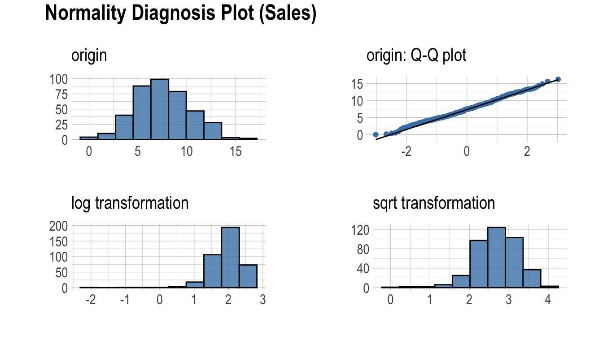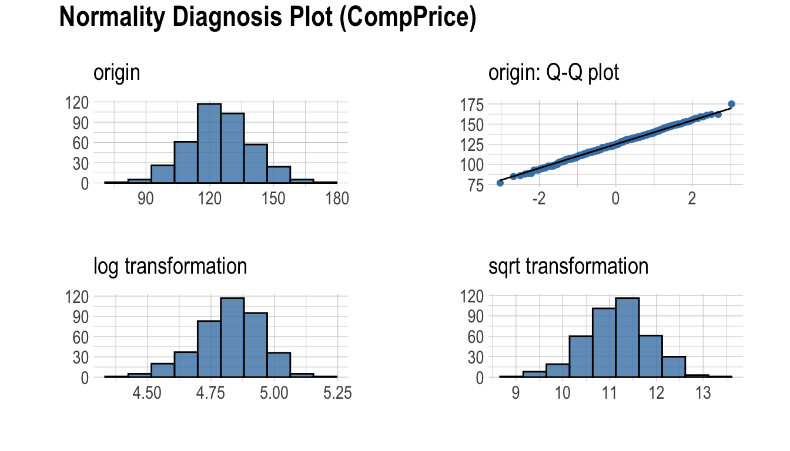
plot_normality() 함수도 dplyr 패키지의 group_by() 함수 구문을 지원한다.
이변량 데이터 EDA
correlate()을 이용한 상관계수 계산
다음처럼 correlate()는 carseats의 모든 수치 변수의 조합의 상관계수를 구한다.:
correlate(carseats)
# A tibble: 56 x 3
var1 var2 coef_corr
<fct> <fct> <dbl>
1 CompPrice Sales 0.0641
2 Income Sales 0.153
3 Advertising Sales 0.270
4 Population Sales 0.0505
# … with 52 more rows다음은 선택된 몇 개의 변수를 포함한 조합에 대해서만 정규성 검정을 수행한다.
# Select columns by name
correlate(carseats, Sales, CompPrice, Income)
# A tibble: 21 x 3
var1 var2 coef_corr
<fct> <fct> <dbl>
1 CompPrice Sales 0.0641
2 Income Sales 0.153
3 Sales CompPrice 0.0641
4 Income CompPrice -0.0918
# … with 17 more rows# Select all columns between year and day (inclusive)
correlate(carseats, Sales:Income)
# A tibble: 21 x 3
var1 var2 coef_corr
<fct> <fct> <dbl>
1 CompPrice Sales 0.0641
2 Income Sales 0.153
3 Sales CompPrice 0.0641
4 Income CompPrice -0.0918
# … with 17 more rows# Select all columns except those from year to day (inclusive)
correlate(carseats, -(Sales:Income))
# A tibble: 35 x 3
var1 var2 coef_corr
<fct> <fct> <dbl>
1 Advertising Sales 0.270
2 Population Sales 0.0505
3 Price Sales -0.445
4 Age Sales -0.232
# … with 31 more rowscorrelate()는 두벌의 변수 조합을 만든다. 그래서 다음과 같은 filter() 함수를 사용해서 한 벌의 조합에 대한 상관계수를 구할 수 있다.:
carseats %>%
correlate(Sales:Income) %>%
filter(as.integer(var1) > as.integer(var2))
# A tibble: 3 x 3
var1 var2 coef_corr
<fct> <fct> <dbl>
1 CompPrice Sales 0.0641
2 Income Sales 0.153
3 Income CompPrice -0.0918correlate() 함수도 dplyr 패키지의 group_by() 함수 구문을 지원한다.
carseats %>%
filter(ShelveLoc == "Good") %>%
group_by(Urban, US) %>%
correlate(Sales) %>%
filter(abs(coef_corr) > 0.5)
# A tibble: 6 x 5
Urban US var1 var2 coef_corr
<fct> <fct> <fct> <fct> <dbl>
1 No No Sales Population -0.530
2 No No Sales Price -0.838
3 No Yes Sales Price -0.655
4 Yes No Sales Price -0.837
# … with 2 more rowsplot_correlate()를 이용한 상관행렬의 시각화
plot_correlate()는 상관행렬을 시각화한다.
plot_correlate(carseats)
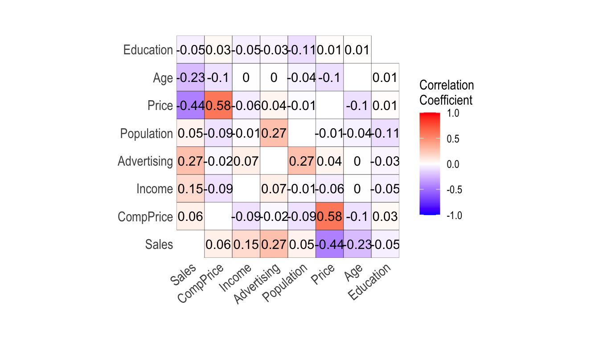
plot_correlate()도 correlate() 함수처럼 여러 개의 변수를 지정할 수 있다. 다음은 선택된 몇 개의 변수를 포함한 상관행렬의 시각화를 수행한다.
# Select columns by name
plot_correlate(carseats, Sales, Price)
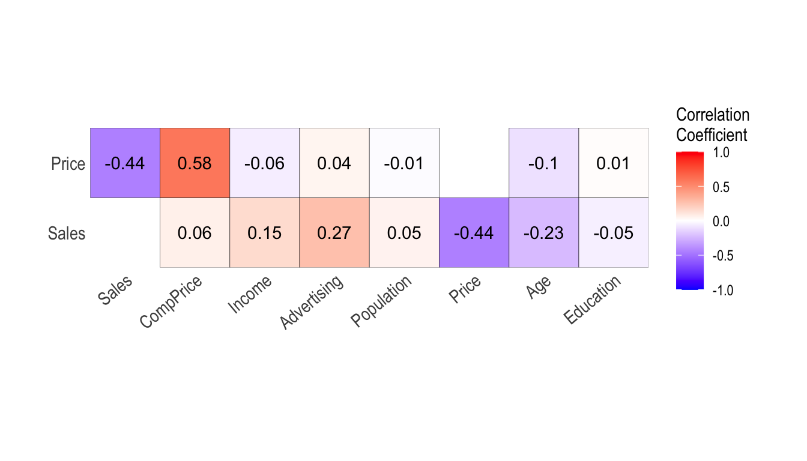
plot_correlate() 함수도 dplyr 패키지의 group_by() 함수 구문을 지원한다.
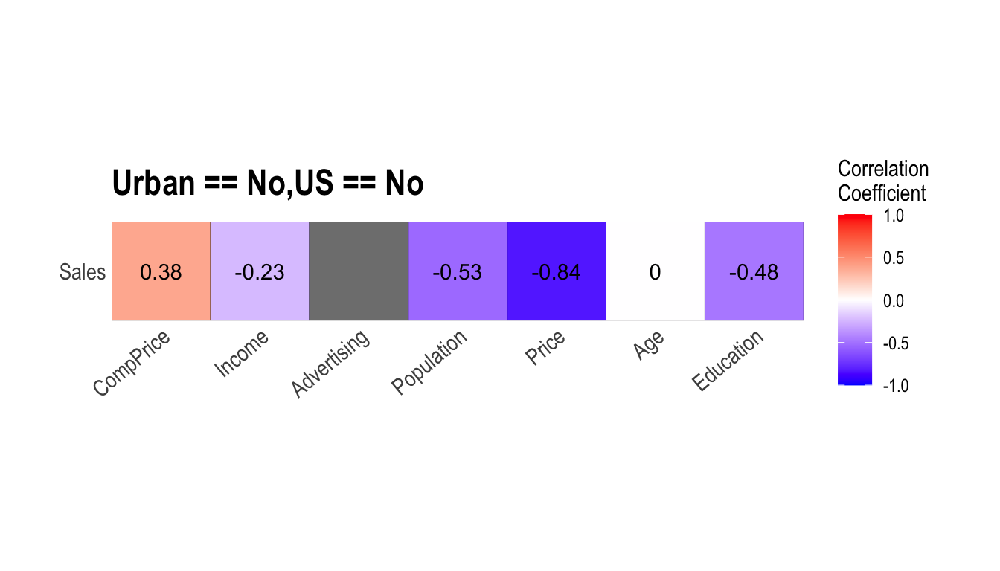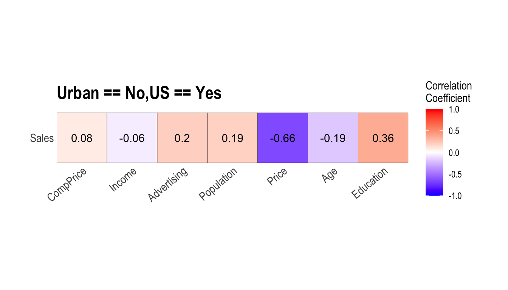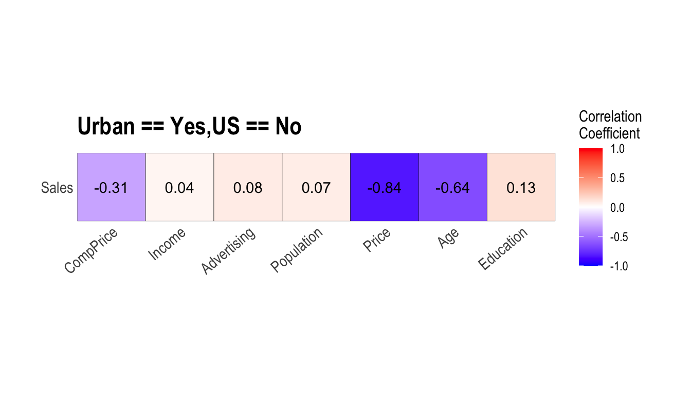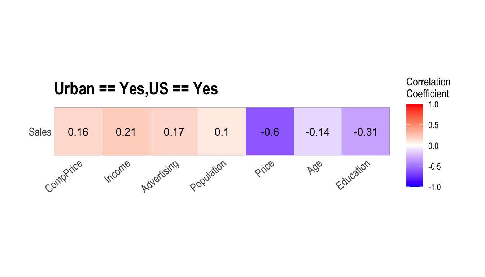
Target 변수에 기반한 EDA
Target 변수 정의
Target 변수 기반으로 EDA를 수행하려면 target_by 클래스 객체를 생성해야 한다. target_by()는 data.frame 또는 data.frame을 상속받은 객체로 target_by 클래스를 생성한다. target_by()는 grouped_df를 생성하는 dplyr의 group_by()와 유사하다. 차이점은 하나의 변수만 지정한다는 것이다.
다음은 carseats data.frame에서 US를 target 변수로 지정하는 예제다.:
categ <- target_by(carseats, US)
Target 변수가 범주형 변수인 경우의 EDA
Target 변수가 범주형일 때 EDA를 수행해 보자. 범주형 변수 US가 target 변수일 때, target 변수와 예측 변수(Predictor) 사이의 관계를 살펴본다.
예측변수가 수치형 변수인 경우
relate()는 taregt 변수와 예측변수 사이의 관계를 보여준다. 다음 예제는 예측변수 Sales와 target 변수 US 사이의 관계를 보여준다. 예측변수 Sales는 수치형 변수다. 이 경우, target 변수의 각 레벨에 대한 기술통계(descriptive statistics)가 표현된다.
# If the variable of interest is a numarical variable
cat_num <- relate(categ, Sales)
cat_num
# A tibble: 3 x 27
variable US n na mean sd se_mean IQR skewness
<chr> <fct> <int> <int> <dbl> <dbl> <dbl> <dbl> <dbl>
1 Sales No 142 0 6.82 2.60 0.218 3.44 0.323
2 Sales Yes 258 0 7.87 2.88 0.179 4.23 0.0760
3 Sales total 400 0 7.50 2.82 0.141 3.93 0.186
# … with 18 more variables: kurtosis <dbl>, p00 <dbl>, p01 <dbl>,
# p05 <dbl>, p10 <dbl>, p20 <dbl>, p25 <dbl>, p30 <dbl>, p40 <dbl>,
# p50 <dbl>, p60 <dbl>, p70 <dbl>, p75 <dbl>, p80 <dbl>, p90 <dbl>,
# p95 <dbl>, p99 <dbl>, p100 <dbl>summary(cat_num)
variable US n na
Length:3 No :1 Min. :142.0 Min. :0
Class :character Yes :1 1st Qu.:200.0 1st Qu.:0
Mode :character total:1 Median :258.0 Median :0
Mean :266.7 Mean :0
3rd Qu.:329.0 3rd Qu.:0
Max. :400.0 Max. :0
mean sd se_mean IQR
Min. :6.823 Min. :2.603 Min. :0.1412 Min. :3.442
1st Qu.:7.160 1st Qu.:2.713 1st Qu.:0.1602 1st Qu.:3.686
Median :7.496 Median :2.824 Median :0.1791 Median :3.930
Mean :7.395 Mean :2.768 Mean :0.1796 Mean :3.866
3rd Qu.:7.682 3rd Qu.:2.851 3rd Qu.:0.1988 3rd Qu.:4.077
Max. :7.867 Max. :2.877 Max. :0.2184 Max. :4.225
skewness kurtosis p00
Min. :0.07603 Min. :-0.32638 Min. :0.0000
1st Qu.:0.13080 1st Qu.:-0.20363 1st Qu.:0.0000
Median :0.18556 Median :-0.08088 Median :0.0000
Mean :0.19489 Mean : 0.13350 Mean :0.1233
3rd Qu.:0.25432 3rd Qu.: 0.36344 3rd Qu.:0.1850
Max. :0.32308 Max. : 0.80776 Max. :0.3700
p01 p05 p10 p20
Min. :0.4675 Min. :3.147 Min. :3.917 Min. :4.754
1st Qu.:0.6868 1st Qu.:3.148 1st Qu.:4.018 1st Qu.:4.910
Median :0.9062 Median :3.149 Median :4.119 Median :5.066
Mean :1.0072 Mean :3.183 Mean :4.073 Mean :5.051
3rd Qu.:1.2771 3rd Qu.:3.200 3rd Qu.:4.152 3rd Qu.:5.199
Max. :1.6480 Max. :3.252 Max. :4.184 Max. :5.332
p25 p30 p40 p50
Min. :5.080 Min. :5.306 Min. :5.994 Min. :6.660
1st Qu.:5.235 1st Qu.:5.587 1st Qu.:6.301 1st Qu.:7.075
Median :5.390 Median :5.867 Median :6.608 Median :7.490
Mean :5.411 Mean :5.775 Mean :6.506 Mean :7.313
3rd Qu.:5.576 3rd Qu.:6.010 3rd Qu.:6.762 3rd Qu.:7.640
Max. :5.763 Max. :6.153 Max. :6.916 Max. :7.790
p60 p70 p75 p80
Min. :7.496 Min. :7.957 Min. :8.523 Min. : 8.772
1st Qu.:7.787 1st Qu.:8.386 1st Qu.:8.921 1st Qu.: 9.265
Median :8.078 Median :8.815 Median :9.320 Median : 9.758
Mean :8.076 Mean :8.740 Mean :9.277 Mean : 9.665
3rd Qu.:8.366 3rd Qu.:9.132 3rd Qu.:9.654 3rd Qu.:10.111
Max. :8.654 Max. :9.449 Max. :9.988 Max. :10.464
p90 p95 p99 p100
Min. : 9.349 Min. :11.28 Min. :13.64 Min. :14.90
1st Qu.:10.325 1st Qu.:11.86 1st Qu.:13.78 1st Qu.:15.59
Median :11.300 Median :12.44 Median :13.91 Median :16.27
Mean :10.795 Mean :12.08 Mean :13.86 Mean :15.81
3rd Qu.:11.518 3rd Qu.:12.49 3rd Qu.:13.97 3rd Qu.:16.27
Max. :11.736 Max. :12.54 Max. :14.03 Max. :16.27 relate()로 생성된 relate 클래스 객체를, plot ()으로 target 변수와 예측변수 사이의 관계를 시각화한다. US와 Sales 간의 관계는 밀도 플롯(density plot)으로 표현된다.
plot(cat_num)
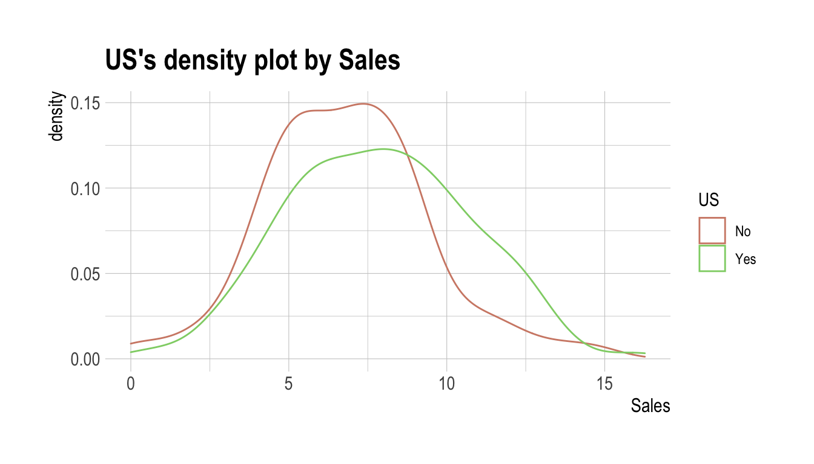
예측변수가 범주형 변수인 경우
다음 예제는 ShelveLoc과 target 변수 US 사이의 관계를 보여준다. 예측변수인 ShelveLoc는 범주형 변수다. 이 경우는 두 변수의 분할표(contentency table)를 보여준다. summary() 함수는 분할표에 대해 독립성 검정을 수행한다.
# If the variable of interest is a categorical variable
cat_cat <- relate(categ, ShelveLoc)
cat_cat
ShelveLoc
US Bad Good Medium
No 34 24 84
Yes 62 61 135summary(cat_cat)
Call: xtabs(formula = formula_str, data = data, addNA = TRUE)
Number of cases in table: 400
Number of factors: 2
Test for independence of all factors:
Chisq = 2.7397, df = 2, p-value = 0.2541plot()은 target 변수와 예측변수 사이의 관계를 시각화한다. US와 ShelveLoc 사이의 관계는 모자이크 플롯(mosaics plot)으로 표현된다.
plot(cat_cat)
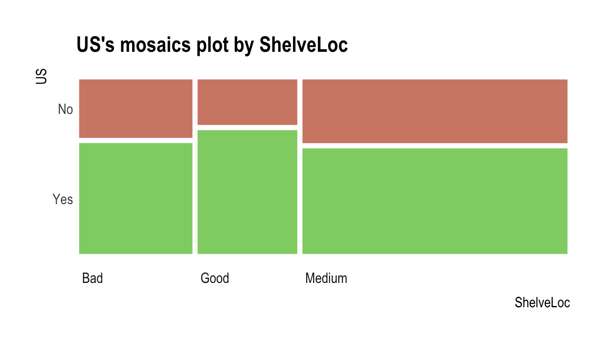
Target 변수가 수치형 변수일 때의 EDA
Target 변수가 수치형일 때 EDA를 수행해 보자. 수치형 변수 `Sales가 target 변수일 때, target 변수와 예측 변수(Predictor) 사이의 관계를 살펴본다.
# If the variable of interest is a numarical variable
num <- target_by(carseats, Sales)
예측변수가 수치형 변수인 경우
다음 예제는 Price와 target 변수 Sales 사이의 관계를 보여준다. 예측변수인 Price는 수치형 변수다. 이 경우, target ~ predictor 관계의 단순 회귀 모델(simple linear model)의 결과를 보여준다. summary() 함수는 모델의 세부 사항을 표현한다.
# If the variable of interest is a numarical variable
num_num <- relate(num, Price)
num_num
Call:
lm(formula = formula_str, data = data)
Coefficients:
(Intercept) Price
13.64192 -0.05307 summary(num_num)
Call:
lm(formula = formula_str, data = data)
Residuals:
Min 1Q Median 3Q Max
-6.5224 -1.8442 -0.1459 1.6503 7.5108
Coefficients:
Estimate Std. Error t value Pr(>|t|)
(Intercept) 13.641915 0.632812 21.558 <2e-16 ***
Price -0.053073 0.005354 -9.912 <2e-16 ***
---
Signif. codes: 0 '***' 0.001 '**' 0.01 '*' 0.05 '.' 0.1 ' ' 1
Residual standard error: 2.532 on 398 degrees of freedom
Multiple R-squared: 0.198, Adjusted R-squared: 0.196
F-statistic: 98.25 on 1 and 398 DF, p-value: < 2.2e-16plot()은 target 변수와 예측변수 사이의 관계를 시각화한다. Sales와 Price 간의 관계는 산점도(scatter plot)로 시각화된다. 왼쪽 그림은 Sales와 Price의 산포도와 회귀선 및 회귀선의 신뢰구간을 나타낸다. 오른쪽 그림은 원 데이터와 선형모델의 예측값 사이의 관계를 산점도로 나타낸 것이다. 두 변수 사이에 선형 관계가 있는 경우 관측치의 산점도는 빨간색 대각선에 수렴한다.
plot(num_num)
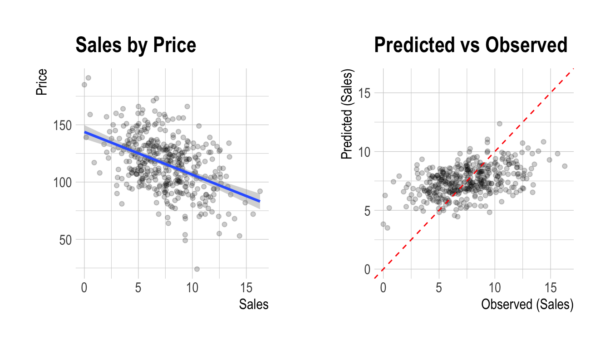
예측변수가 범주형 변수인 경우
다음 예제는 ShelveLoc과 target 변수 Sales 사이의 관계를 보여준다. 예측변수인 ShelveLoc은 범주형 변수다. target ~ predictor 관계의 one-way ANOVA를 수행한 결과를 보여준다. 결과는 분산분석의 관점에서 표현된다. summary() 함수는 예측변수의 각 레벨에 대한 회귀 계수를 보여준다. 다시말해 target ~ predictor 관계의 단순 회귀분석에 대한 상세 정보를 보여준다.
# If the variable of interest is a categorical variable
num_cat <- relate(num, ShelveLoc)
num_cat
Analysis of Variance Table
Response: Sales
Df Sum Sq Mean Sq F value Pr(>F)
ShelveLoc 2 1009.5 504.77 92.23 < 2.2e-16 ***
Residuals 397 2172.7 5.47
---
Signif. codes: 0 '***' 0.001 '**' 0.01 '*' 0.05 '.' 0.1 ' ' 1summary(num_cat)
Call:
lm(formula = formula(formula_str), data = data)
Residuals:
Min 1Q Median 3Q Max
-7.3066 -1.6282 -0.0416 1.5666 6.1471
Coefficients:
Estimate Std. Error t value Pr(>|t|)
(Intercept) 5.5229 0.2388 23.131 < 2e-16 ***
ShelveLocGood 4.6911 0.3484 13.464 < 2e-16 ***
ShelveLocMedium 1.7837 0.2864 6.229 1.2e-09 ***
---
Signif. codes: 0 '***' 0.001 '**' 0.01 '*' 0.05 '.' 0.1 ' ' 1
Residual standard error: 2.339 on 397 degrees of freedom
Multiple R-squared: 0.3172, Adjusted R-squared: 0.3138
F-statistic: 92.23 on 2 and 397 DF, p-value: < 2.2e-16plot ()은 target 변수와 예측변수 사이의 관계를 시각화한다. Sales와 ShelveLoc의 관계는 박스플롯(box plot)으로 표현된다.
plot(num_cat)
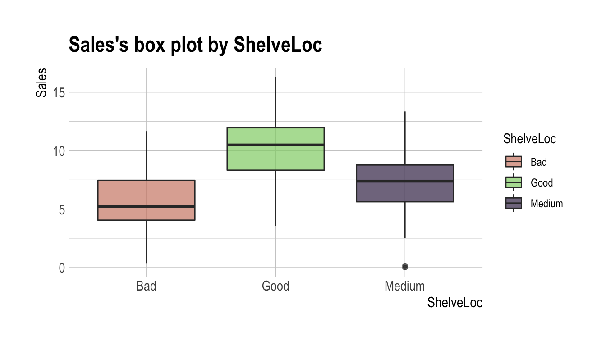
eda_report()를 이용한 EDA 보고서 작성
eda_report()는 데이터 프레임이나 데이터 프레임을 상속받은 객체(tbl_df, tbl 등)의 모든 변수들에 대해서 EDA를 수행한다.
eda_report()는 EDA 보고서를 다음과 같은 두 개의 형태로 작성한다.
- Latex에 기반한 pdf 파일
- html 파일
보고서의 목차는 다음과 같다.
- 개요
- 데이터셋 정보
- 변수 정보
- 수치변수
- 일변량 변수 EDA
- 기술통계
- 수치변수의 정규성 검정
- 통계량과 시각화 정보
- 변수들간의 관계
- 상관계수
- 변수 조합의 상관계수
- 수치변수의 상관행렬 플롯
- 상관계수
- Target 변수 기반의 EDA
- 그룹화된 기술통계
- 그룹화된 Target과 수치형 변수 관계
- 그룹화된 Target과 범주형 변수 관계
- 그룹화된 Target과 변수들간의 관계
- 그룹화된 Target과 수치형 변수의 상관계수
- 그룹화된 Target과 수치형 변수의 상관행렬 플롯
- 그룹화된 기술통계
다음은 carseats의 품질진단 리포트를 작성한다. 파일 형식은 pdf이며, 파일이름은 EDA_Report.pdf다.
carseats %>%
eda_report(target = Sales)
다음은 EDA.html라는 이름의 html 형식의 보고서를 생성한다.
carseats %>%
eda_report(target = Sales, output_format = "html", output_file = "EDA.html")
EDA 보고서는 EDA 과정에 도움을 주기 위한 자동화 보고서다. 보고서 결과를 참고하여 데이터 분석 시나리오를 설계한다.
EDA 리포트 내용
pdf 파일의 내용
- 보고서의 표지는 다음 그림과 같다.
Figure 1: EDA 보고서 표지
- 보고서의 차례는 다음 그림과 같다.

Figure 2: EDA 보고서 차례
- 많은 정보는 보고서에서 표로 표현된다. 표의 예시는 다음 그림과 같다.
Figure 3: EDA 보고서 도표 예시
- EDA 보고서에서 정규성 검정 내용은 시각화 결과를 포함한다. 그 결과는 다음 그림과 같다.
Figure 4: EDA 보고서 정규성 검정 내용
- EDA 보고서에서 상관관계 정보는 시각화 결과를 포함한다. 그 결과는 다음 그림과 같다.
Figure 5: EDA 보고서 상관관계 내용
- EDA 보고서에서 선형관계에 대한 정보는 표와 시각화 결과를 포함한다. 그 결과는 다음 그림과 같다.
Figure 6: EDA 보고서 선형관계 정보
- EDA 보고서에서 ANOVA 정보는 표와 시각화 결과를 포함한다. 그 결과는 다음 그림과 같다.
Figure 7: EDA 보고서 ANOVA 정보
html 파일의 내용
- 보고서의 타이틀과 목차는 다음 그림과 같다.
Figure 8: EDA 보고서 타이틀과 목차
- 많은 정보는 보고서에서 표로 표현된다. html 파일에서 표의 예시는 다음 그림과 같다.
Figure 9: EDA 보고서 도표 예시 (웹)
- EDA 보고서에서 정규성 검정 정보는 시각화 결과를 포함한다. html 파일의 결과는 다음 그림과 같다.
Figure 10: EDA 보고서 정규성 검정 정보 (웹)